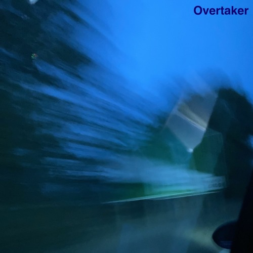

"Overtaker"
"Overtaker" is my second non-album single, although it was originally intended to be on my third DJB album Troubles in Transit. The album itself never came to fruition as work began on a separate project, Burning the Daylight Oil, in late 2022, a few months after the release of "Final Sunset", the other intended single from the album. While Troubles in Transit was meant to be a side project to that project when work began, I was already working enough on Burning, so no work was really done on the album apart from the previous two tracks mentioned, and an intro. Eventually, when enough time had passed since I started work on the project, I decided to move onto other things and leave the album in the past.
Recording and production
Almost a year after the last single from Troubles in Transit, "Final Sunset", I sat down and cracked open the old software I used to make the track. I had been working on Burning the Daylight Oil for ages, trying to make a song as good as possible, and I felt like making something casually for once. After a little fumbling with the keys, I accidentally fell onto what would become the chord progression that would haunt my dreams for months to come. I rather liked it, and wrote it into the software. I had also been having a look at a specific sound (again, I don't know how exactly I discovered it but still), that being the "Solid Bass" sound from a Yamaha DX-100. I downloaded a rip of the sound and ran the chord progression through it. Again, I liked it, and so began to work on the rest of the track. By the end of the day, the track was finished, and I really liked it. I released it the following day as the second single from my never-to-be-completed album Troubles in Transit.
However, as work continued on Burning the Daylight Oil, that chord progression kept coming back to haunt me. It was such a solid sound that I would often test instruments with it, and when I had no better ideas for chord progressions, I'd just use it instead. After all, I knew it worked. This, however, led to three tracks on the album using the same chord progression, along with a B-side also using it. But, what is quite strange about these three tracks on the album, is that all three of them I regard as the top three tracks from the album. Two of them were released as singles, and the remaining other one was almost released as the third. It's quite possible that the “magic dust” that seemed to be sprinkled on “Overtaker” still worked in widely different settings.
I'll take note of that.
Artwork
The artwork, once again, features a photo I took while I was on the road, although this time literally. It was taken out of the window of a friend's car, while I was trying to take a photo of a sign. However, due to the darkness of that night, the exposure time of the camera was too long for how fast my friend was driving, and so it came out blurred. Later, when trying to find a cover for the track, I chose the cover because I liked the blur of the image, and felt it matched the name of the track.

Released: 16 June 2023
Recorded: June 2023